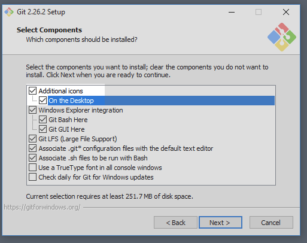
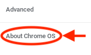
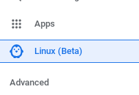
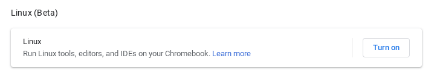

Setting Up Your Terminal¶
Warning
Are you here too early? The content on this page fits with chapters 16 and higher. If you have not made it to the Terminal chapter yet, you should probably wait a bit before reading this page.
If you are a student using a school-issued device, then the CLI software is probably already on your machine. Check with your teacher before installing anything!
The command line interface (CLI) is a vital tool to learn for any programmer. This page provides installation instructions for Mac, Windows, and Chromebooks.
Once you have the CLI up an running on your machine, return to the Terminal chapter to practice how to use it.
Mac Users¶
Good news! The CLI application is called Terminal, and it comes with every Mac. Read the Launch the Terminal section to see where to find the application.
Windows Users¶
Download the Git for Windows installer.
After the installer has fully downloaded, run it. You will then move through several screens of options.
On the first screen, select Additional icons –> On the Desktop.
On all of the other screens, just use the pre-selected choices.
Read the Launch the Terminal section to see where to find the application. It is called Git Bash.
Chromebook Users¶
Before installing the terminal application, you should first update your device to the latest operating system.
Update ChromeOS¶
Click on the clock area in the lower right-hand corner of the desktop. Open the Settings panel by clicking on the gear icon.
From the menu options shown on the left of the panel, select About Chrome OS.
Click the Check for Updates button and then wait for the device to finish any installations.
Note
Fully updating the operating system might require several checks. Repeat steps 2 and 3 until you receive the
Your Chromebook is up to datemessage.
{kind=link}
OK. Now you’re ready to install the CLI software.
Activate Linux Environment¶
Open the Settings panel again.
From the menu options shown on the left of the panel, click Linux (Beta).
If Linux is not yet active on the Chromebook, you will see a Turn On button. If the button is absent, Linux is already active.
Click the Turn On button and follow the steps on the screen. The setup may take 10 minutes (or more) to finish.
When done, a terminal window opens automatically.
Read the Launch the Terminal section to see where to find the application again after you close it.
Note
Chromebooks are designed to use applications stored in the cloud. Installing and running apps directly on your Chromebook will likely slow down its performance.